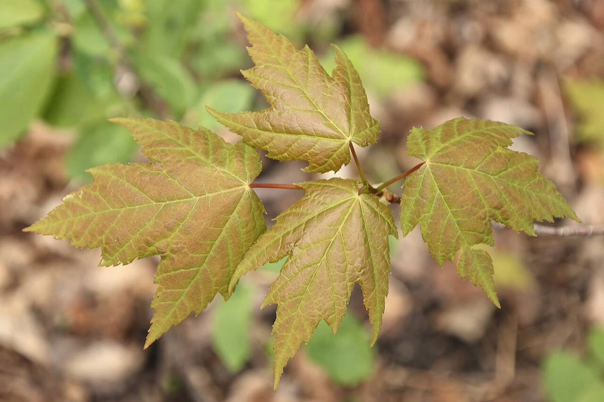
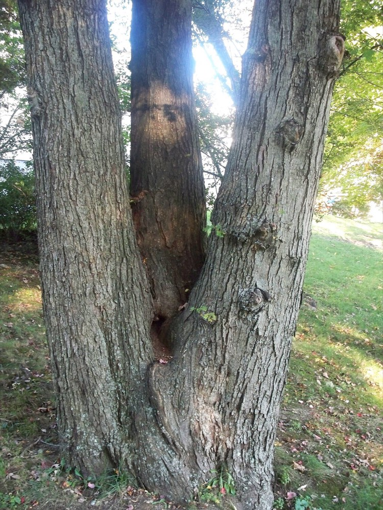

Red Maple
Acer rubrum
- Kind
- tree · Aceraceae
- Native to Vermont
- yes
- Legal status
- Native, abundant; no special legal status found (checked 2026-10-30)
- Look-alikes
- Silver maple; Norway maple; Sugar maple; Maple-leaf viburnum; Mountain maple (young)
Pictures


Names
Red maple, Acer rubrum. Its Latin species name means "red" (search summary of the factsheet).
Range and habitat
Native to North America. A medium-sized tree up to 90 feet; in a forest the trunk is usually clear for some distance, in the open the trunk is shorter and the crown rounded. The seedling guide says red maple thrives in a variety of soil types, moisture levels and elevations.
How to identify (by season; look-alikes and the key difference)
- Leaves: opposite, simple, palmately lobed with three to five lobes, a toothed (serrated) edge, shallow but variable sinuses, 2 to 4 inches long; green above, whitened beneath.
- Look-alikes: silver maple, Norway maple, maple-leaf viburnum (rounded teeth, not sharp ones) and sugar maple. Young mountain maple is very hard to separate (see below and How to Identify Trees).
By growth stage (trees: seedling, sapling, pole-size, mature or old; what to look at in each)
| Stage | What to look at | What you see |
|---|---|---|
| Small seedling | leaf shape, teeth, leaf stalk | Leaves can look almost entire or have three lobes; jagged, doubly serrate edges; a red leaf stalk is common but not consistent (mountain maple can have one too). |
| Larger seedling | lobes, teeth | Leaves consistently three-lobed with jagged, doubly serrate edges; the stalk can be red. |
| Sapling and pole-size | bark, twig | Young trees have smooth, light gray bark. A search summary warns this can be mistaken for healthy beech bark. Reddish, lustrous twigs. |
| Mature and old trees | bark | Darker, breaking into long, fine scaly plates. |
| Winter, any age | twig, bud | Reddish, lustrous opposite twigs; V-shaped leaf scars with three bundle scars; blunt green or reddish buds with several loose scales. |
| Fruit (late spring to early summer) | seeds | Samaras in clusters on long slender stems, light brown often reddish. |
Through the year
Dates are typical for Vermont and shift with elevation and year; "approximate" means the source gave a season and the dates are a translation of it.
| When | What | Look for | What to do | Dates |
|---|---|---|---|---|
| Mar 25 to Apr 30 | flower (identify) | Small flowers in hanging clusters, usually bright red (occasionally yellow), opening in early spring, usually before the leaves. | - | approximate |
| May 20 to Jun 30 | fruit (identify) | Clusters of light brown, often reddish winged seeds (samaras) 1/2 to 3/4 inch long on long slender stems, ripening in late spring and early summer. | - | approximate |
| Nov 1 to Mar 31 | dormant (identify) | Opposite, reddish and lustrous twigs with small lenticels and V-shaped leaf scars; blunt buds, green or reddish, with several loose scales. | - | approximate |
Signs on the land (tracks, scat, browse, nests, holes, calls)
Not described in the sources read.
Role in the forest (what it eats, what eats it, what it needs)
Maple twigs and leaves are key deer foods (White-tailed Deer); moose strip bark from red, mountain and striped maples in winter (Moose).
What helps it thrive (light, soil, shelter, food and the trees it uses)
- Light: moderately tolerant of shade in the North.
- Soil and water: does well on a wider range of soil types, textures, moisture regimes and pH than most trees; develops best on moist, fertile, loamy soils and tolerates waterlogged soils and flooding. In much of the Northeast it is an overstory dominant only in swamps and other wet sites, and in low, rich woods and along the margins of lakes and marshes (FEIS).
- Regeneration: sprouts vigorously from the stump, root crown or root suckers after fire or mechanical damage, and a bank of persistent seedlings often builds up under a forest canopy; it increases after windthrow, clearcutting or fire. The review says crop tree release may be a low-cost management option.
- Browse: a particularly valuable deer browse in late fall and winter; stump sprouts are especially sought by deer (White-tailed Deer).
Managing for it (habitat practices) and living with it (conflicts and damage)
Not recorded here. In plans the species is named in stand descriptions by basal area, regeneration and crop trees. A search summary says foresters sometimes treat red maple as a weed species where high-quality oaks are wanted; that is for the forester's plan.
Legal status
No special status found.
Sources
- Virginia Tech Dendrology, Red maple: https://dendro.cnre.vt.edu/dendrology/syllabus/factsheet.cfm?ID=1 (read 2026-10-30)
- J. Robertson and J. Truong, A Guide to the Seedlings of New England (FEMC, 2021): https://www.uvm.edu/femc/attachments/project/999/seedling_guide-compressed_1.pdf
- USDA Forest Service, Fire Effects Information System, Acer rubrum: https://www.fs.usda.gov/database/feis/plants/tree/acerub/all.html (read through a summarizing fetch 2026-11-01)
What this page is based on
Kind of source: mixed (Virginia Tech factsheet; New England seedling guide)
What was read: Virginia Tech Dendrology factsheet (ID 1) for red maple, read through a summarizing fetch on 2026-10-30, and the red maple pages of A Guide to the Seedlings of New England (read as text). The factsheet gives no habitat, no flower sex and no fall color. Calendar windows translate 'early spring', 'late spring and early summer' and 'winter'. A search summary of the Silvics account (red maple grows on a wider range of sites than any other eastern forest tree; seldom lives past 150 years) was not read on the page. Habitat needs (light, soil, regeneration, response to cutting) added 2026-11-01 from the USDA Forest Service Fire Effects Information System species review (summarizing fetch); the review is national in scope and the Northeast details are those it names.
Last checked: 2026-10-30
Vermont land and forest reference, built 2026-11-05. Rules and dates here are summaries, not legal advice; dates shift with elevation and year. Photo and recording credits · Note: _reference/US-VT/Species/Red Maple.md